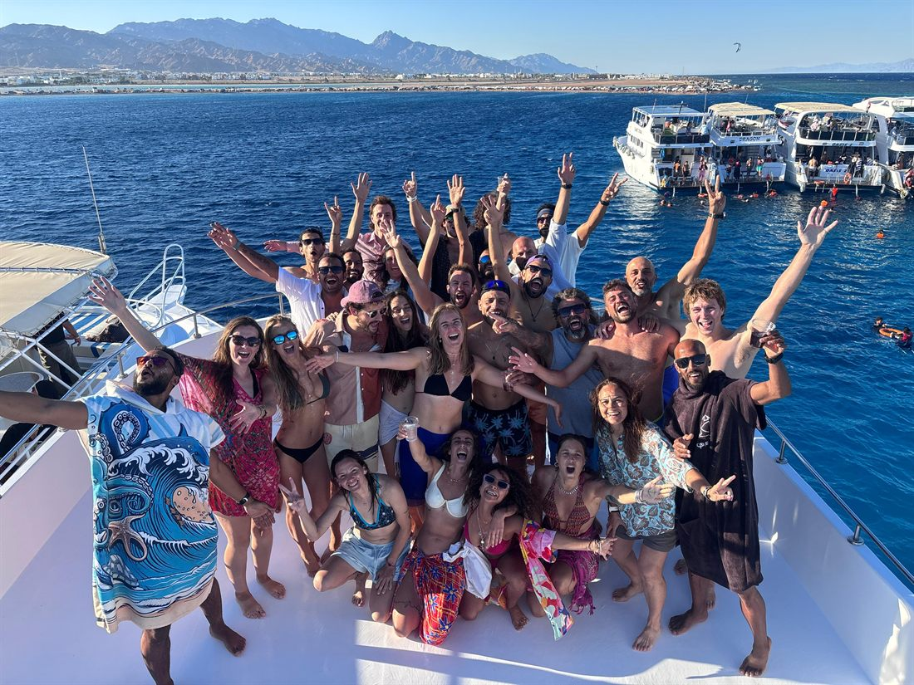

People come to freediving for the depth. A number on a watch, a personal best, the quiet thrill of going down on a single breath. Almost nobody stays for that reason.
They stay for what it does to the rest of their life.
Freediving is the only sport where the goal is to do less — less movement, less effort, less noise in the head. And in learning to do less underwater, you accidentally learn something that follows you back onto dry land. Here is what people actually find down there.
Calm — the reset you can't fake
One breath underwater drops you into a state most people spend years chasing on a meditation cushion. It is not willpower. The moment your face meets the water and your breath is held, your nervous system shifts gears on its own: the heart slows, the body quietens, and the constant background hum of daily stress simply switches off.
You cannot perform your way into it and you cannot force it. That is exactly why it works. For an hour, the only thing that exists is the next breath and the blue in front of you — and that stillness is portable. People describe sleeping better, reacting slower to the things that used to spike them, and carrying a baseline of quiet they did not have before.
Focus — a steady mind under pressure
Freediving trains a very specific skill: staying clear-headed exactly when your body is shouting at you to panic. The urge to breathe arrives, the mind wants to grab the wheel, and your whole practice becomes learning to notice that signal without obeying it.
That is impulse control in its purest form — and it does not stay in the water. The same nervous-system regulation that keeps you composed on a deep dive is the thing that keeps you composed in a hard conversation, a deadline, a moment that used to rattle you. You are not learning to hold your breath. You are learning to hold your state.
Confidence — earned in the water, carried everywhere
There is a particular kind of confidence that only comes from doing something your brain was certain you couldn't. The first time you float above open water and let yourself sink, every instinct says no. Then you do it anyway, calmly, and surface fine.
That experience rewires something. Comfort and safety in the water let you quietly push your own limits, and once you have proven to yourself that the panic was just noise, the limits in the rest of your life start to look negotiable too.
Fitness — strong, mobile, and low-impact
Freediving builds a kind of fitness that is easy to keep for life. Breath control, lung capacity and flexibility, core stability, and efficient, relaxed movement — all developed without pounding your joints. No impact, no burnout, no chasing intensity.
The breathing work alone changes how you use your lungs on land: fuller, slower, more efficient. It is the rare practice that makes you fitter and calmer at the same time, and it ages well — plenty of the best freedivers are in their forties, fifties and beyond.

Half the magic is underwater. The other half is the people you meet there
The ocean, unlocked
Once you can hold your breath and move calmly underwater, the sea stops being a surface you look at and becomes a place you belong. Snorkelling, spearfishing, scuba, surfing, underwater photography — every water activity gets better, safer and more intuitive.
Marine life behaves differently around a quiet freediver with no bubbles and no noise. You stop being a visitor and start being part of the scene — and that changes your relationship with the ocean for good.
Belonging — the part nobody expects
This is the one people never see coming. You arrive to learn a skill and you leave with a community. There is something about sharing the water, trusting each other on safety, and sitting around a table afterwards that builds friendships faster than almost anything on land.
Laughter on the boat, dinner under the stars, the group that celebrates your first depth like it was their own — that part is not planned. It just happens. Ask anyone who has done a course or a trip with us what they remember most, and it is rarely the number they hit. It is who they were with.
So — why freedive?
Because the depth is just the doorway. Behind it is a calmer nervous system, a steadier mind, more confidence, a body that feels good, an ocean that finally opens up, and a community that sticks. You come for the breath-hold. You stay for everything it quietly gives back.
At Freediving Brain, the very first session is built to show you this — not by talking about it, but by letting your own body prove it to you in the water.